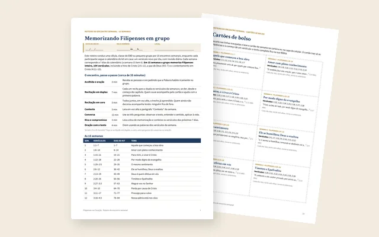
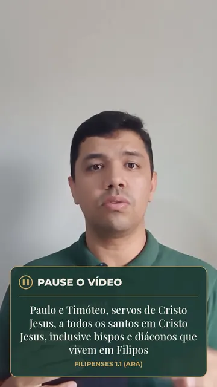
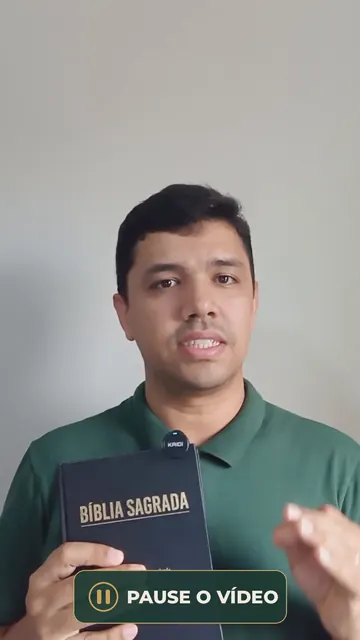

Filipenses, 1 versículo por dia
Filipenses inteiro no coração.
Mesmo achando que não tem memória.
Veja o método na aula abaixo:
📱 Pelo celular · ⏱️ 10 min por dia · 📖 ARA
Por Abner Gonzales, seminarista e missionário,
que memorizou Jonas inteiro
✔ Abner memorizou o livro de Jonas inteiro (4 capítulos) e hoje está memorizando Romanos.
O que diz quem está fazendo o desafio de Filipenses
“Tenho gostado muito de aprender mais da Palavra de Deus, pois nunca tinha parado para memorizar um livro inteiro da Bíblia.”
Ana Lídia, desafio de Filipenses
“Eu aceitei o desafio proposto pelo missionário Abner de decorar o capítulo inteiro de Filipenses em 30 dias. E eu já estou há uma semana.”
Irmã Nette, Jornada de Filipenses
“Já estou vendo a diferença de quanto ajuda a realmente memorizar.”
Lay · IBMN, desafio de Filipenses
O que você recebe hoje
- Acesso imediato às aulas na área de membros da Kiwify
- Dia 1: você memoriza Fp 1.1. O vídeo pausa para você repetir.
- No começo, a rotina leva uns 10 minutos.
- 1 versículo por dia.
- Os 104 versículos de Filipenses em 104 dias (cerca de 3,5 meses).
- Funciona no celular
R$ 67 à vista no Pix ou até 12x no cartão
São 104 versículos: menos de R$ 0,65 por versículo guardado no coração.
Garantia atualizada: estendemos para até 30 dias. Se aplicar o método e não conseguir recitar, devolvemos 100%.
💠 No checkout, toque em “Pix” para pagar na hora.

O bônus fica liberado na área de membros logo após a compra.
Se pagar por boleto, o bônus de hoje fica garantido, mesmo que você pague depois.
🛡️ Garantia atualizada: estendemos para até 30 dias. Se aplicar o método e não conseguir recitar, devolvemos 100%.
Se você aplicar o método e não conseguir recitar os versículos, devolvemos 100% do valor.
Prévia do curso
Imagens reais da aula do Dia 1 (Filipenses 1.1, ARA).


Perguntas rápidas
E se eu esquecer?
Todo dia você revisa de Fp 1.1 até o versículo do dia.
Essa revisão costura os versículos e deixa os primeiros firmes.
Quanto tempo por dia?
No começo, uns 10 minutos. Perto do fim, com a revisão maior, cerca de 20 a 25 minutos.
Serve para iniciante?
Sim. Você não precisa de memória boa.
É 1 versículo por dia, pelo celular, com o vídeo pausando para você repetir.
E a garantia?
Garantia atualizada: estendemos para até 30 dias. Se você aplicar o método e não conseguir recitar os versículos, devolvemos 100% do valor.
O custo de esperar: cada semana adiada são 7 versículos a menos no coração.
Teste grátis: memorize Filipenses 1.1 agora
Fp 1.1, ARA
Abner Gonzales
Piauiense, seminarista e missionário há mais de 10 anos.
Já servi em Teresina, no interior do Piauí, em Atibaia-SP, na Coreia do Sul e em outros países.
Memorizei o livro de Jonas inteiro e hoje estou memorizando Romanos.
Apliquei esse método em livros inteiros da Bíblia.
Agora quero mostrar o caminho para quem sempre quis memorizar a Palavra e achava que não tinha memória para isso.
Nessa aula, eu mostro como memorizar a carta de Filipenses inteira.
É 1 versículo por dia, sem depender de uma memória boa.
Você vai ver:
- A rotina diária em 6 passos, com o vídeo pausando para você repetir.
- Como 1 versículo por dia leva à carta inteira em 3,5 meses.
- Como revisar de Fp 1.1 até o versículo do dia sem esquecer.
Se eu tivesse aprendido isso no começo, teria memorizado muito mais. Aproveite.